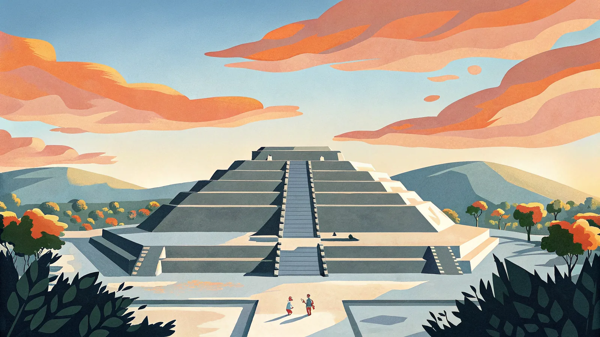
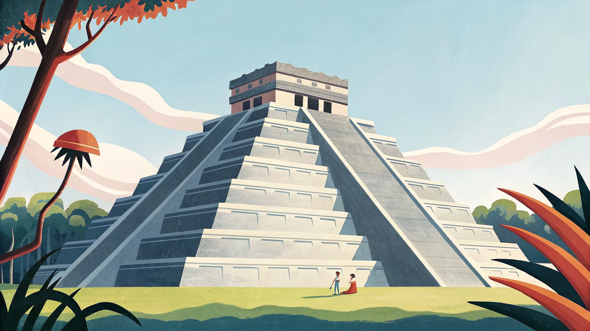
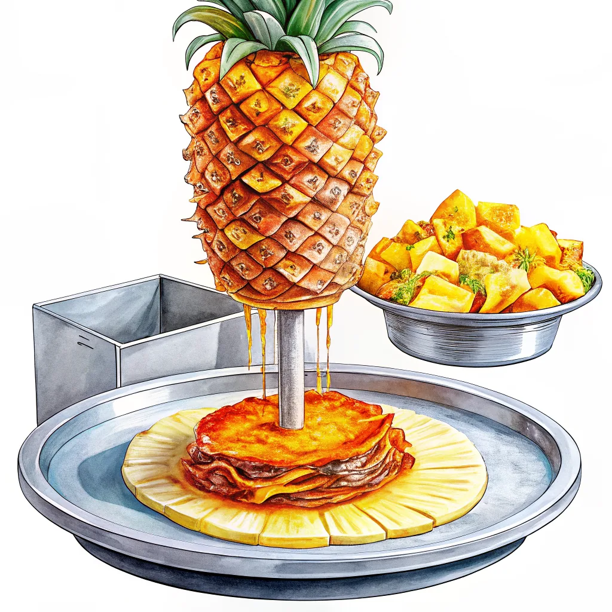

極彩色の街並みや死者の日、ルチャリブレなど独特な文化がSNSで人気上昇中。マヤ文明の遺跡やフリーダ・カーロゆかりの美術館、本場のタコスを目当てに訪れる旅行者が増えている。
メキシコは国土が広く、地域によって気候がまったく異なります。高原の首都メキシコシティ・オアハカ・グアナファトは年中温暖でベストは乾季の11〜4月、カリブ海沿岸のカンクン・リビエラマヤは高温多湿で6〜11月はハリケーン季、内陸のユカタン半島は雨季前の4〜5月が特に高温になります。
色が濃いオレンジほど気温が高いことを示しています。
ベスト：11〜4月の乾季（爽やかで観光しやすい）／ 5〜10月は雨季で午後にスコールが多く、朝晩は年中肌寒い。
ベスト：11〜4月（湿度が下がりビーチ日和）／ 6〜11月はハリケーン季で特に8〜10月は暴風雨の危険、5〜9月は蒸し暑い。
ベスト：11〜3月（比較的過ごしやすい）／ 4〜5月は雨季前の猛暑で40°C近くまで上がる日も、6〜10月はハリケーン季で蒸し暑い。
夏休み（7〜8月）と年末年始、死者の日（10月末〜11月頭）は高騰しやすい。狙い目は乾季にあたる1〜3月・11月で、気候も安定していて航空券も比較的落ち着く。
緑・白・赤の三色旗。中央の国章にはサボテンに止まりヘビをくわえるワシが描かれ、アステカ建国神話に由来する。
人気の観光地から穴場まで、実際に行って良かった場所を厳選してまとめました。